6 Week 5
We’re again drawing some of this material from the STEMinist_R materials which can be found here
6.1 2.1 Plotting
These lessons are evenly divided between live coding and performed by the instructor and exercises performed by the students in class with instructor support.
This class will take place with students typing directly into an R script for the exercises all of which can be found in the Week 4 file here
You can download just the R files for just this week via wget with the following link
wget https://raw.githubusercontent.com/BayLab/MarineGenomicsData/main/week5.tar.gzthis is a compressed file which can be uncompressed via:
tar -xzvf week5.tar.gz- A few useful commands that we will cover include:
- points()
- lines()
- abline()
- hist()
- boxplot()
- plot()
- A few useful arguments within plot(): main, xlab, ylab, col, pch, cex
6.2 Scatterplots
Within our msleep dataframe let’s plot sleep_total by bodywt (bodyweight)
library(ggplot2)
data(msleep)
plot(msleep$sleep_total,msleep$sleep_rem)
# or plot response variable as a function "~" of the predictor variable
plot(msleep$sleep_total~msleep$sleep_rem) #you'll notice this swaps the x and y axis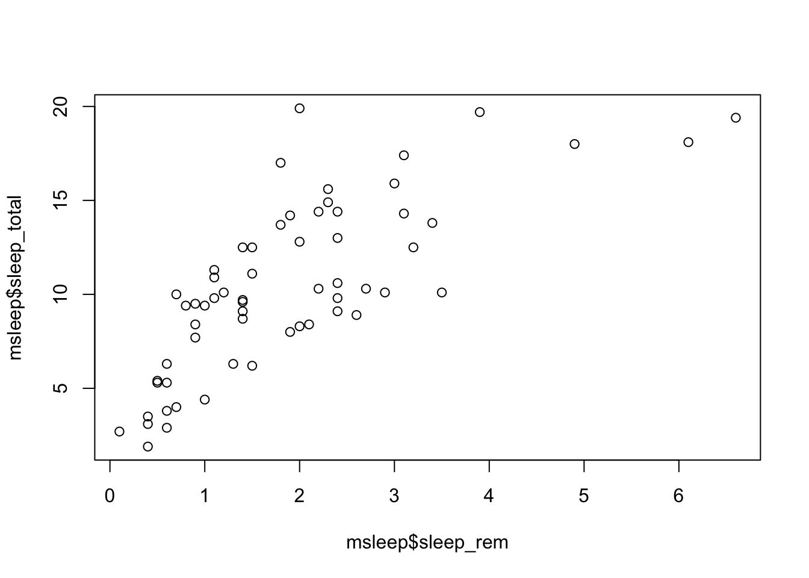
6.3 Customizing your plot
- There are several different arguments within plotting functions that can be used to customize your plot.
colchanges colorpchchanges point charactercexchanges sizetypechanges type (“l” = line, “p” = points, “b” = both)ltychanges line typebtychanges (or removes) the border around the plot (“n” = no box, “7” = top + right, “L” = bottom+left, “C” top+left+bottom, “U” = left+bottom+right)
You can view different point characters with ?pch
There are many color options in R. For some general colors you can write the name (blue, red, green, etc). There are apparently 657 named colors in R (including "slateblue3, and peachpuff4) but you can also use the color hexidecimal code for a given color. There are several comprehensives guides for colors in R online and one of which can be found (here)[https://www.nceas.ucsb.edu/sites/default/files/2020-04/colorPaletteCheatsheet.pdf]
Let’s remake the total_sleep against sleep_rem plot and add-in some modifiers
#Choose a pch and make the color blue and give it a bottom+left border
plot(msleep$sleep_total~msleep$sleep_rem, pch = 16, col="blue", bty="L")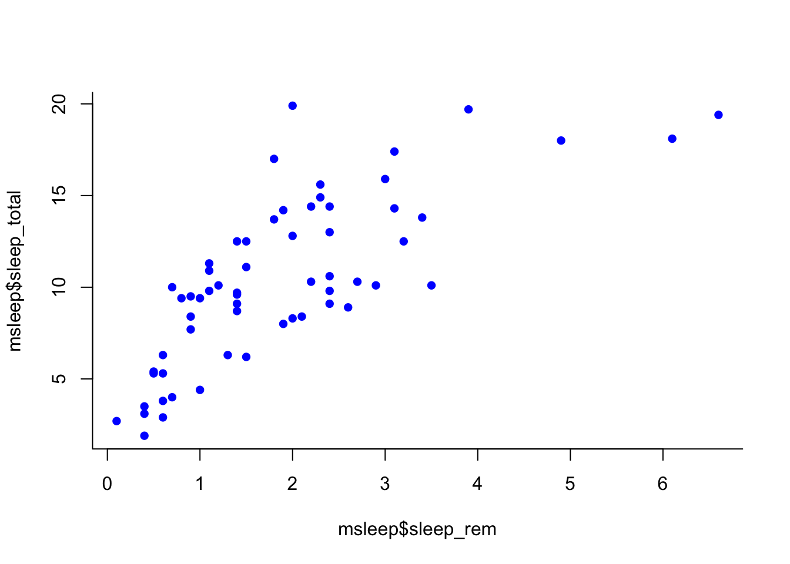
We can change the axes and title labels using “xlab,” “ylab,” and “main” arguments. Let’s add labels to our plot.
#Choose a pch and make the color blue and give it a bottom+left border
plot(msleep$sleep_total~msleep$sleep_rem, pch = 16, col="blue", bty="L", xlab="REM Sleep (hours)", ylab= "Total Sleep (hours)") 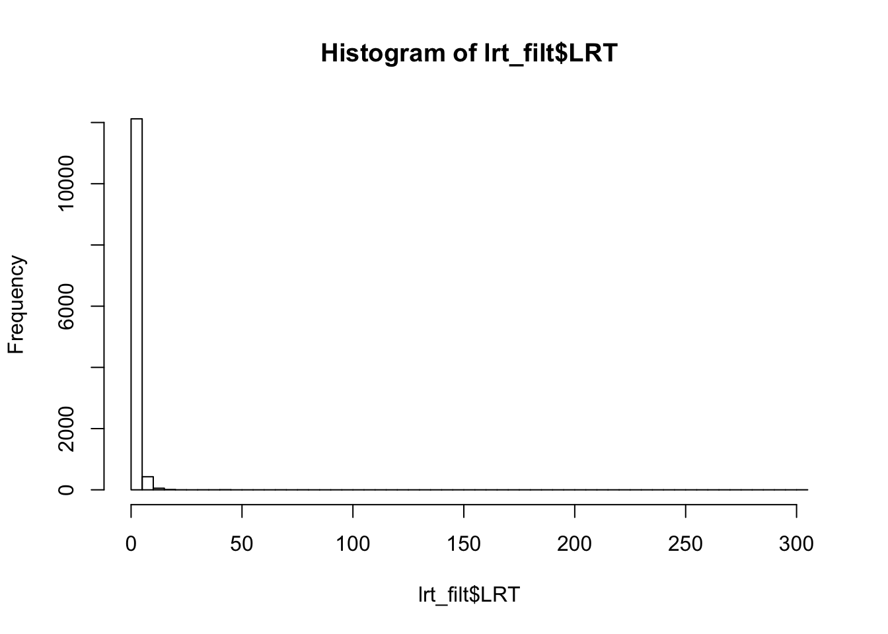
You may want to find out which points are on a plot. You can use identify() in place of plot() to identify specific points within your plot. This function prints out the row numbers for the points that you selected.
We can also add lines to an existing plot with ablines(). Let’s add a line fit from a linear model to our plot.
#first make a plot
plot(msleep$sleep_total~msleep$sleep_rem, pch = 16, col="blue", bty="L", xlab="REM Sleep (hours)", ylab= "Total Sleep (hours)")
#then add a line. The function lm runs a linear model on our x, y values.
abline(lm(msleep$sleep_total~msleep$sleep_rem))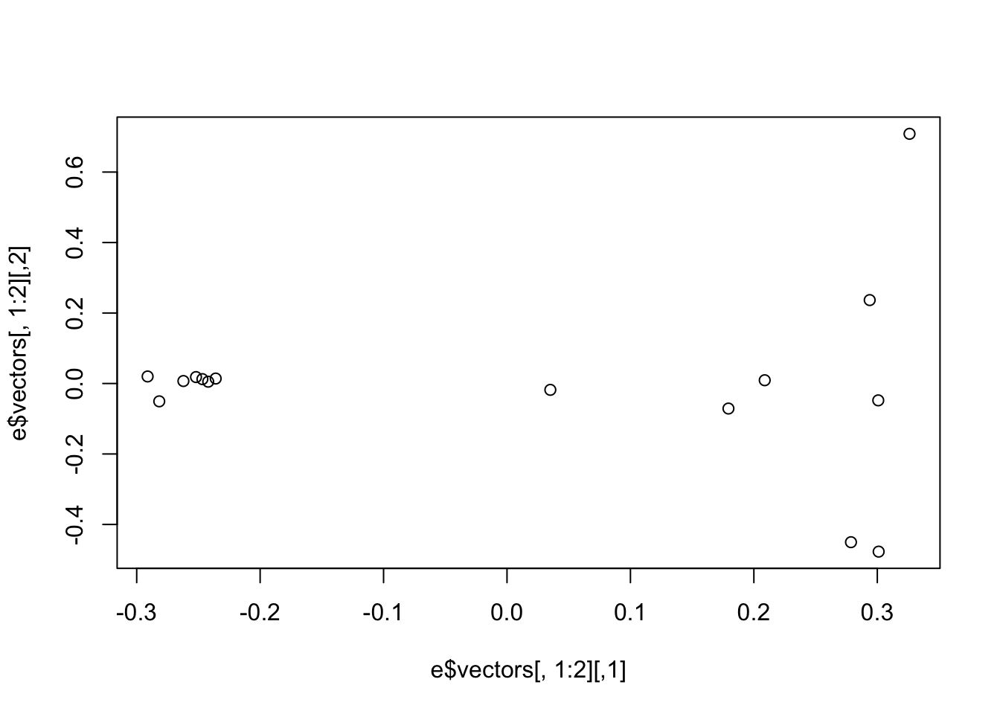
You can add a legend to a plot with legend() which needs you to specify the location.
To do this, let’s make a cutoff for our points and color them by points above and below the cutoff. We’ll use our subsetting skills from last week. Feel free to review that section (1.3).
#start by defining points by whether they are greater than sleep_total 16 and storing
#first make a empty column named colors within the msleep dataframe
msleep$colors=NA
#store the colors "red" or "black" in the color column for the rows that satsify the following criteria.
msleep$colors[msleep$sleep_total >= 17] <-"red"
msleep$colors[msleep$sleep_total < 17] <-"black"
plot(msleep$sleep_total~msleep$sleep_rem, pch = 16, col=msleep$colors, bty="L", xlab="REM Sleep (hours)", ylab= "Total Sleep (hours)") 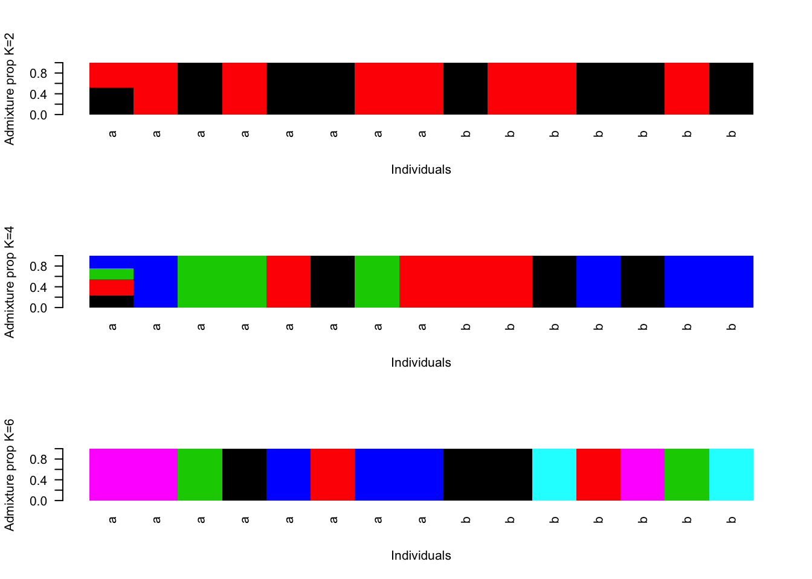
In addition to scatterplots you can make histograms and boxplots in base R. The same parameter options (pch, col, ylab, xlab, etc) apply for these plots as well as scatterplots.
R will automatically plot a barplot if you give to the plot() function a continuous variable and a factor. If you have a vector stored as a character converting it to a factor via as.factor will make a boxplot.
#let's make a histogram of sleep_total and fill it with the color palette rainbow() which needs to know how many colors to use
hist(msleep$sleep_total, col=rainbow(10))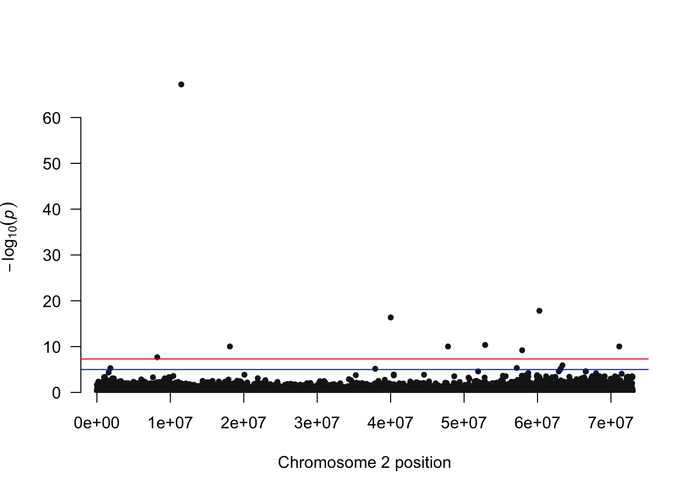
#let's make a boxplot of sleep_total and order making eachone a different color (how would you find out how many unique orders are in msleep?)
#using plot
#plot(msleep$sleep_total~as.factor(msleep$order), col=rainbow(19)) #this is commented out simply to avoid ploting the same plot twice
#or boxplot
boxplot(msleep$sleep_total~as.factor(msleep$order), col=rainbow(19)) 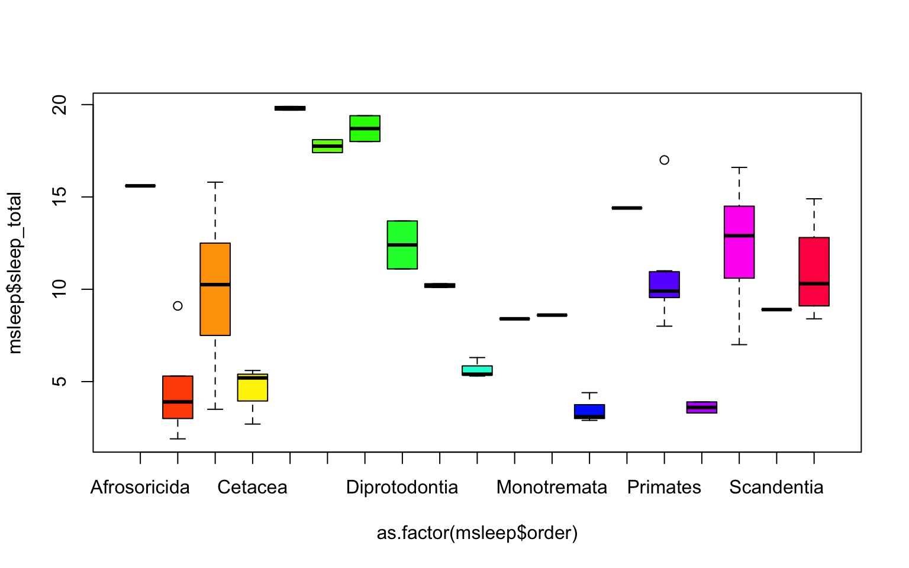 Another example looking at sleep variation across the different types of consumers (carnivore, herbivore, insectivore and omnivore):
plot(msleep$sleep_total~as.factor(msleep$vore),col=rainbow(4), xlab="REM Sleep (hours)", ylab= "Total Sleep (hours)")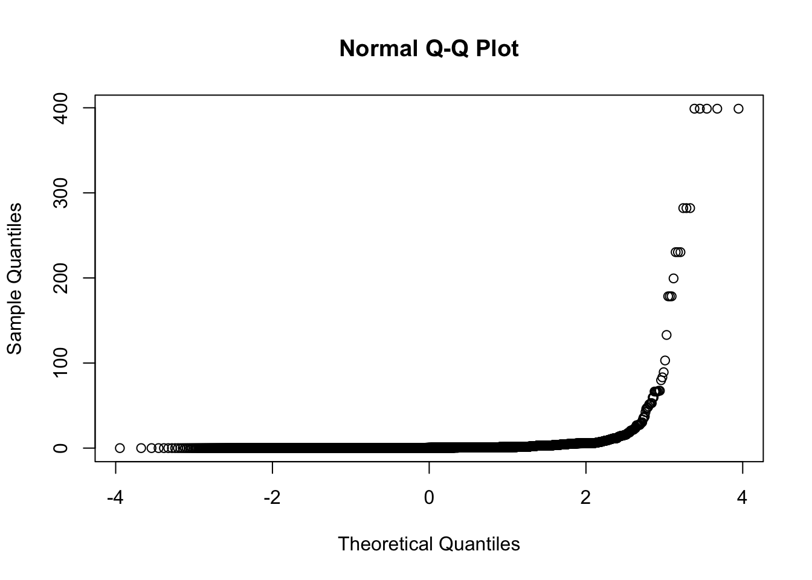
6.4 Practice Problems 2.1
Exercise 2.1
Read in the data using
data(ChickWeight)
# Note: this dataset can also be accessed directly from the ChickWeight package in R
# (see ?ChickWeight)
data("ChickWeight")
- First, explore the data. How many chicks are in the dataset? How many different diets are in the experiment?
Solution
length(unique(ChickWeight$Chick))## [1] 50length(unique(ChickWeight$Diet))## [1] 4
- To vizualize the basics of the data, plot weight versus time
Solution
plot(ChickWeight$weight ~ ChickWeight$Time,
xlab = "Time (days)",
ylab = "Weight (gm)")
- Plot a histogram of the weights of the chicks at the final day of the experiments (i.e. only the chicks who made it to the last day)
Solution
par(mfrow = c(1,1))
hist(ChickWeight$weight[ChickWeight$Time == max(ChickWeight$Time)],
xlab = "Weight (gm)",
main = "Weights at final day of experiment",
col = rainbow(10))
- Create a boxplot where the x-axis represents the different diets and the y-axis is the weights of the chicks at the final day of the experiments
Solution
my.new = ChickWeight[ChickWeight$Time == max(ChickWeight$Time), ]
boxplot(weight ~ Diet,
data = my.new,
xlab = "Diet",
ylab = "Weight (gm)",
main = "Final weights given diet type",
col = c("red", "blue", "orange", "green"))Try using the package R Color Brewer to generate color palettes. Go to http://colorbrewer2.org/ to vizualize palettes. You can choose palettes that are colorblind safe, print friendly, etc.
# Install R Color Brewer
#install.packages("RColorBrewer")
library("RColorBrewer")
- Define a color pallete with 10 colors and re-plot the histogram of the weights of the chicks at the final day of the experiments in these colors Note: if histogram has n breaks and n is less than 10, it will just use first n colors. If n is greater than 10, it will reuse colors.
Solution
my.colors = brewer.pal(10, "Paired")
hist(ChickWeight$weight[ChickWeight$Time == max(ChickWeight$Time)], xlab = "Weight (gm)",main = "Weights at final day of experiment", col = my.colors)
6.5 2.2 plotting with ggplot2
GGPlot is a package that allows you to make a lot of different kinds of plots and has become increasingly popular. There are also many tutorials on how to use ggplot as well as example code that could be modified to fit the data you’re interested in plotting. There is a really helpful cheatsheat (here)[https://www.rstudio.com/wp-content/uploads/2015/03/ggplot2-cheatsheet.pdf]
There is a little bit of a learning curve for ggplot as the syntax is structured differently than base R plotting. One thing that remains the same and is even more noticible in ggplot is the iterative process of building a plot, one aspect at a time.
Let’s demonstrate what ggplot can do with the states data set
#load in the data
data(state)
states = as.data.frame(state.x77) # convert data to a familiar format - data frame
str(states) # let's take a look at the dataframe## 'data.frame': 50 obs. of 8 variables:
## $ Population: num 3615 365 2212 2110 21198 ...
## $ Income : num 3624 6315 4530 3378 5114 ...
## $ Illiteracy: num 2.1 1.5 1.8 1.9 1.1 0.7 1.1 0.9 1.3 2 ...
## $ Life Exp : num 69 69.3 70.5 70.7 71.7 ...
## $ Murder : num 15.1 11.3 7.8 10.1 10.3 6.8 3.1 6.2 10.7 13.9 ...
## $ HS Grad : num 41.3 66.7 58.1 39.9 62.6 63.9 56 54.6 52.6 40.6 ...
## $ Frost : num 20 152 15 65 20 166 139 103 11 60 ...
## $ Area : num 50708 566432 113417 51945 156361 ...#make an initial ggplot
ggplot(data=states) 
We just see a grey box. In order to tell ggplot what to put in the box we use the aes(). The aes() function stands for aesthetics and will be used to specify our axes and how we want the data grouped.
#lets make a scatterplot of population and income
#we specify which axes we want to be x and y with aes()
#we'll then use geom_point to tell it to make a scatterplot using the data we specified in the first command
ggplot(data=states, aes(x=Population, y=Income))+geom_point() 
There are many types of plots in ggplot that can be called with geom_ including geom_line, geom_boxplot geom_bar and many others!
Let’s add a line to our plot that of best fit for Population ~ Income. Each time we add something to our plot we use the + sign. We’ll use geom_smooth() to draw a line with the method for lm which stands for linear model.
ggplot(data=states, aes(x=Population, y=Income))+geom_point()+geom_smooth(method="lm") 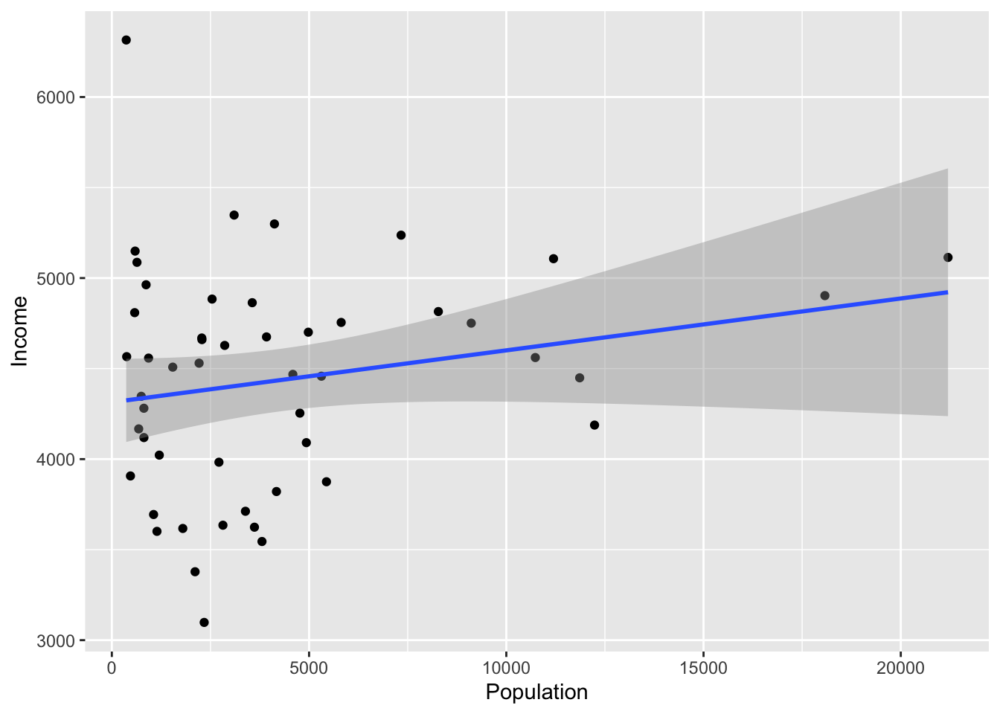
As you can already see ggplot works with many more parameters drawn in default than plotting in base R. For example, the background of our plot is grey the confidence interval of our line is drawn for us and is shaded dark grey and the line of best fit is in blue. All of these things can be modified if we wish. Many of these options can easily be changed with the theme_ functions.
Let’s change to a minimal theme which removes the gray backgroun in the back of the plot. Play around with the other themes to see what they change.
ggplot(data=states, aes(x=Population, y=Income))+geom_point()+geom_smooth(method="lm")+theme_minimal() 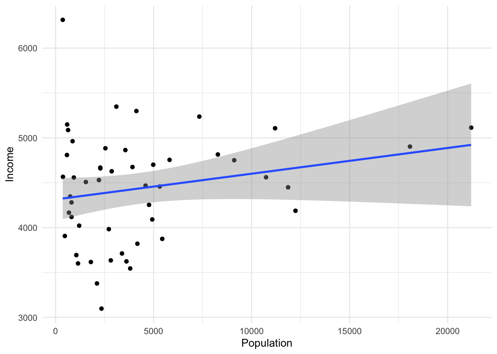
Another plot example:
ggplot(data=states, aes(x=Income, y=Illiteracy, color=Population)) +geom_point()+geom_smooth(method="lm", color="red")+theme_classic() 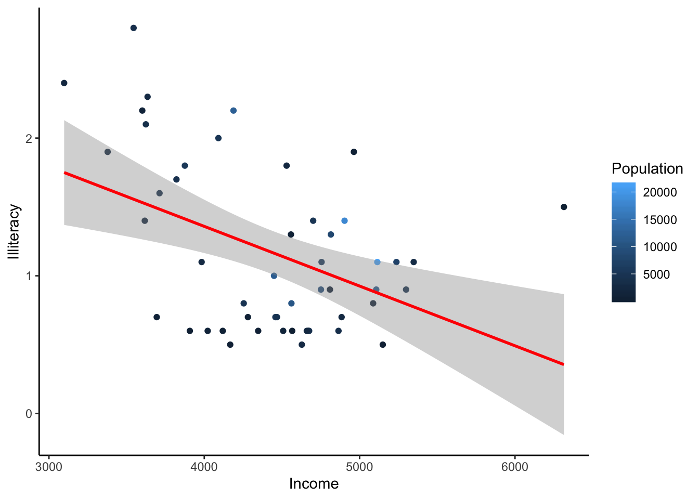
Let’s use the msleep data set to explore what ggplot can do with character vectors. Make a plot of total sleep against REM sleep and then group by “vore.”
# because our vore vector is a character vector we must convert it to a factor before we can use it to group or color
ggplot(msleep, aes(y=sleep_total, x=sleep_rem, group=as.factor(vore), color=as.factor(vore))) +geom_point()## Warning: Removed 22 rows containing missing values (geom_point).
That looks fine, but we may want to add axis labels and change the legend. The code below does just that and changes the theme.
# as we add things to the plot the line can get really long, you can hit enter after the plus sign to start a new line
ggplot(msleep, aes(y=sleep_total, x=sleep_rem, group=as.factor(vore), color=as.factor(vore)))+
geom_point()+
labs(y= "Total Sleep (hours)", x= "REM sleep (hours)")+
theme_minimal()+
scale_color_manual(name="Diet",
labels = c("Carnivore",
"Herbivore",
"Insectivore",
"Omnivore",
"NA"),
values = c("carni"="blue",
"herbi"="red",
"insecti"="green",
"omni"="brown",
"NA"="orange"))## Warning: Removed 27 rows containing missing values (geom_point). Our plot at this point is getting very clunky. You can assign what we have so far to an object and continue to add parameters without having to copy and paste the whole plot.
Our plot at this point is getting very clunky. You can assign what we have so far to an object and continue to add parameters without having to copy and paste the whole plot.
#assign to an object
g<-ggplot(msleep, aes(y=sleep_total, x=sleep_rem, group=as.factor(vore), color=as.factor(vore)))+
geom_point()+
labs(y= "Total Sleep (hours)", x= "REM sleep (hours)")+
theme_minimal()+
scale_color_manual(name="Diet",
labels = c("Carnivore",
"Herbivore",
"Insectivore",
"Omnivore",
"NA"),
values = c("carni"="blue",
"herbi"="red",
"insecti"="green",
"omni"="brown",
"NA"="orange"))One final example to share. I use ggplot often with data sets that have multiple character vectors and I want to see how they relate to my continuous variables. For example in the iris dataframe we may be interested in looking at the relationship between Sepal.Length and Sepal.Width for each species. You can look at all of these together with facet_wrap or facet_grid.
ggplot(iris, aes(y=Sepal.Length, x=Sepal.Width, group=Species, color=Species))+
geom_point()+
facet_wrap(~Species)+
geom_smooth(method="lm") Finally in ggplot we may be interested in seeing the mean values plotted with error bars for several groups. You can use the function
Finally in ggplot we may be interested in seeing the mean values plotted with error bars for several groups. You can use the function stat_summary to find the mean and error around that mean for the given grouping.
Here’s a plot looking at the mean chickweight by diet.
ggplot(ChickWeight, aes(x=Time, y=weight, group=Diet, color=Diet))+
stat_summary(fun.y=mean, geom="point", size=1)+
stat_summary(fun.y=mean, geom="line", size=1)+
stat_summary(fun.data = mean_se, geom = "errorbar",
aes(width=0.1), size=0.5)6.6 Practice Problems 2.2
Exercise 2.2 Plotting in ggplot
- Add best fit lines to our msleep plot for each order.
Solution
# we can just use the geom_smooth command from above and ggplot takes care of the rest!
# The code below will only work if you stored your plot in object g.
g+geom_smooth(method="lm")## Warning: Removed 22 rows containing non-finite values (stat_smooth).## Warning: Removed 27 rows containing missing values (geom_point).
- In the msleep data, make a boxplot of sleep_total against vore. Make sure vore is a factor. Color the boxplots by vore (remember how we had to color the boxplots in base R) it is similar in ggplot.
Solution
ggplot(msleep, aes(y=sleep_total, x=as.factor(vore), fill=as.factor(vore)))+geom_boxplot()
- Load a new dataframe
midwest(run data(midwest)) and plot a scatterplot of area against popdensity grouped and color by state. Do a facet grid by state.
Solution
ggplot(midwest, aes(y=area, x=popdensity, col=as.factor(state)))+geom_point()+facet_grid(~state)
- In the midwest dataframe make a scatterplot of the popdensity by poptotal of only IL (this requires you to subset your data for illinois).
Solution
#we can subset our data first and store the subset in a new dataframe
il<-midwest[midwest$state == "IL",]
ggplot(il, aes(x=popdensity, y=poptotal))+geom_point() 
- In the midwest dataframe plot the mean and standard error for popdensity for each state. Color this plot in your favorite palette.
Solution
ggplot(midwest, aes(x=state, y=popdensity, color=state))+
stat_summary(fun.y=mean, geom="point", size=1)+
stat_summary(fun.y=mean, geom="line", size=1)+
stat_summary(fun.data = mean_se, geom = "errorbar",
aes(width=0.1), size=0.5)+
theme_minimal()+
scale_color_manual(values=rainbow(5))## geom_path: Each group consists of only one observation. Do you need to
## adjust the group aesthetic?
6.7 For loops and the apply family of functions
A few useful commands: function(), is.na, which, var, length, for(){ }, points, print, paste, plot, unique, sample
for loops: In many languages, the best way to repeat a calculation is to use a for-loop: For example, we could square each number 1 to 10
squares = rep(NA, 10) # use rep to create a vector length 10 of NAs to store the result
for (i in 1:10) { # for loop
squares[i] = i^2
}
squares## [1] 1 4 9 16 25 36 49 64 81 100An alternative to for-loops in R is using the ‘apply’ family, while for-loops apply a function to one item at a time and then go on to the next one, “apply” applies functions to every item at once
6.8 apply family
6.8.1 sapply
There are several apply functions that vary in the output the return and vary somewhat in the input they require. We’ll go over sapply “simplifying” apply which returns a vector, first.
#?sapply
# syntax: sapply(X = object_to_repeat_over, FUN = function_to_repeat)
# simple example of sapply over a vector
# we can use an in-line function definition
sapply(1:10, function(x) x^2)## [1] 1 4 9 16 25 36 49 64 81 100# equivalently, we can define our own functions separately for sapply
# e.g. a function that calculates the area of a circle radius r, pi*r^2
areaCircle = function(r){
return(pi * r^2)
}
sapply(1:10, areaCircle)## [1] 3.141593 12.566371 28.274334 50.265482 78.539816 113.097336
## [7] 153.938040 201.061930 254.469005 314.159265# in R, we can also just use short-hand for simple vector calculations:
pi*(1:10)^2## [1] 3.141593 12.566371 28.274334 50.265482 78.539816 113.097336
## [7] 153.938040 201.061930 254.469005 314.159265# but unlike the short-hand, sapply can also iterate over elements in a list
listy = list(a = TRUE, b = c("a", "b", "c"), c = 10:100)
str(listy) # look at the structure of 'listy'## List of 3
## $ a: logi TRUE
## $ b: chr [1:3] "a" "b" "c"
## $ c: int [1:91] 10 11 12 13 14 15 16 17 18 19 ...length(listy) # look at the length of 'listy'## [1] 3# use sapply to return a vector for length of each object within the list
sapply(listy, FUN = length) ## a b c
## 1 3 91You can also use sapply to create plots! For example, use sapply to plot these 4 dataframes at once:
df1 = data.frame(x1 = 1:10, y1 = 1:10)
df2 = data.frame(x2 = 1:10, y2 = -1:-10)
df3 = data.frame(x3 = 1:10, y3 = 10:1)
df4 = data.frame(x4 = 1:10, y4 = 1:10)
my_list = list(df1, df2, df3, df4) # put 4 data frames together in a list
par(mfrow = c(2,2)) # set up frame for 4 plots
sapply(my_list, plot) # plot my_list with sapply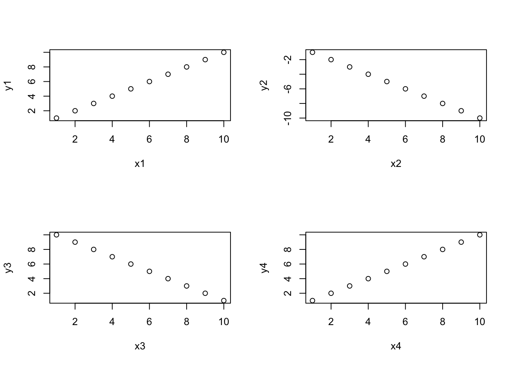
## [[1]]
## NULL
##
## [[2]]
## NULL
##
## [[3]]
## NULL
##
## [[4]]
## NULL6.8.2 apply
The apply function is highly useful for applying a function to rows or columns of a dataframe or matrix.
Example syntax for the dataframe or matrix X:
apply(X = over this object, MARGIN 1 for rows or 2 for columns,FUN = apply this function)
You can also use apply on a dataframe we worked with earlier the states data to plot each column against Population
#load in the data
data(state)
states = as.data.frame(state.x77) # convert data to a familiar format - data frame
str(states) # let's take a look at the dataframe## 'data.frame': 50 obs. of 8 variables:
## $ Population: num 3615 365 2212 2110 21198 ...
## $ Income : num 3624 6315 4530 3378 5114 ...
## $ Illiteracy: num 2.1 1.5 1.8 1.9 1.1 0.7 1.1 0.9 1.3 2 ...
## $ Life Exp : num 69 69.3 70.5 70.7 71.7 ...
## $ Murder : num 15.1 11.3 7.8 10.1 10.3 6.8 3.1 6.2 10.7 13.9 ...
## $ HS Grad : num 41.3 66.7 58.1 39.9 62.6 63.9 56 54.6 52.6 40.6 ...
## $ Frost : num 20 152 15 65 20 166 139 103 11 60 ...
## $ Area : num 50708 566432 113417 51945 156361 ...# calculate the mean for each column
apply(states, 2, mean)## Population Income Illiteracy Life Exp Murder HS Grad
## 4246.4200 4435.8000 1.1700 70.8786 7.3780 53.1080
## Frost Area
## 104.4600 70735.8800# note you could get this with colMeans() or summary(), along with the min and max and other values, but there may be instances where you only want the mean
# you could also plot each column against Population in ggplot
apply(states, 2, FUN = function(i) ggplot(states, aes(x=Population, y = i))+geom_point()+geom_smooth(method="lm")+theme_classic())## $Population
##
## $Income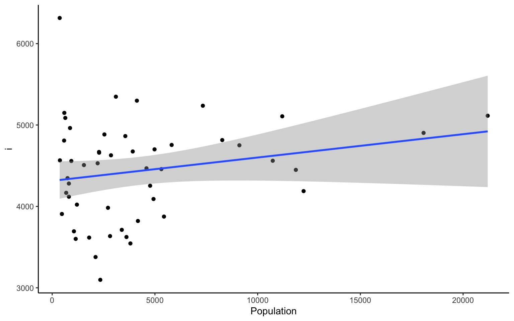
##
## $Illiteracy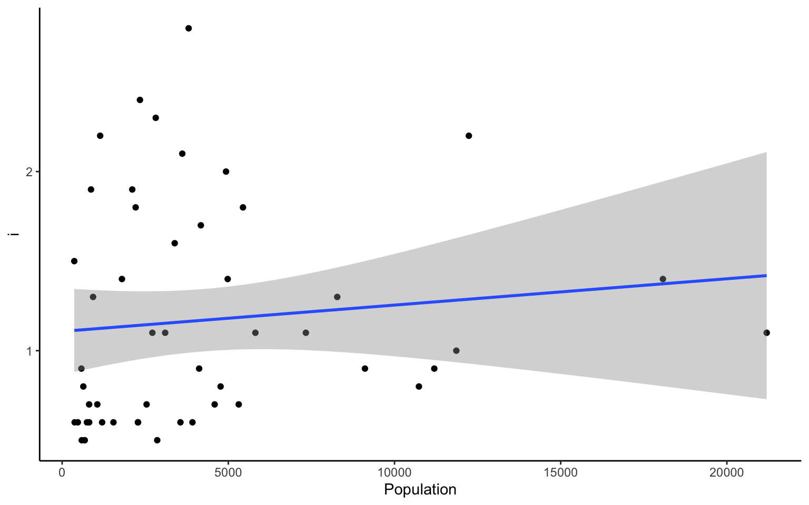
##
## $`Life Exp`
##
## $Murder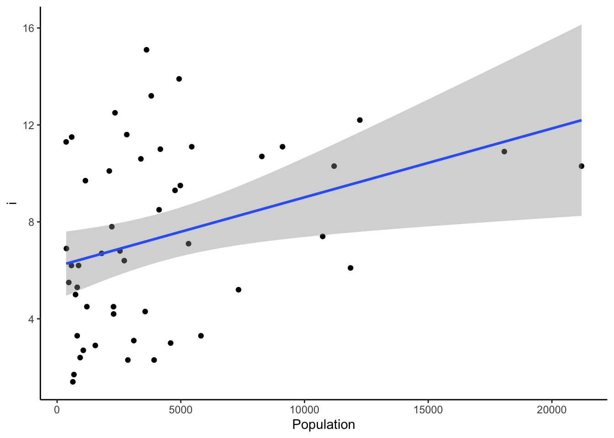
##
## $`HS Grad`
##
## $Frost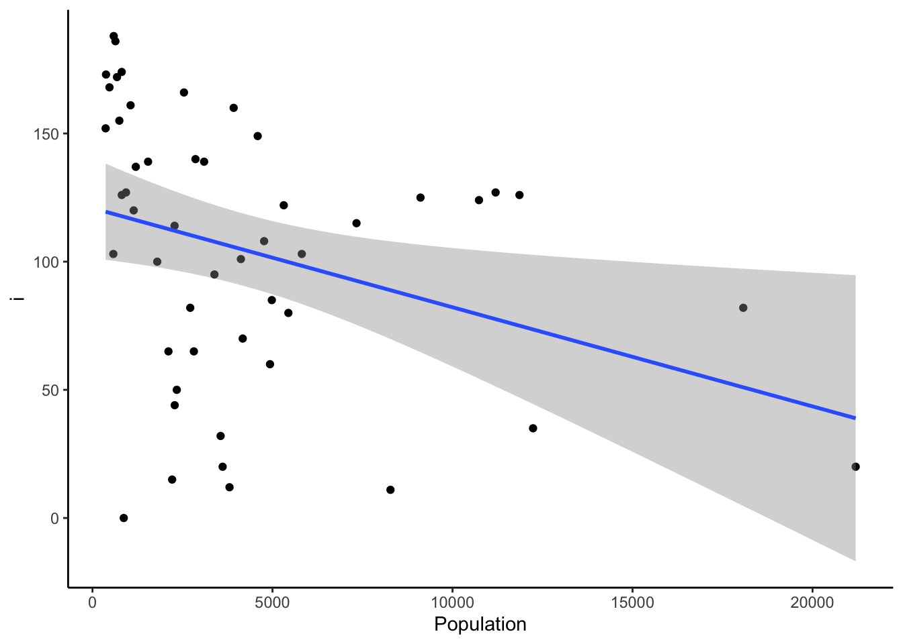
##
## $Area
We can do the same things across all rows. But if you want to plot all the rows as we did the columns above, I suggest you do that with a smaller dataset than the states dataframe.
#calculate the sum across each row in states
apply(states, 1, sum)## Alabama Alaska Arizona Arkansas California
## 58094.55 573412.81 120312.25 57620.56 182838.71
## Colorado Connecticut Delaware Florida Georgia
## 111500.46 13581.68 7604.76 67328.26 67280.04
## Hawaii Idaho Illinois Indiana Iowa
## 12399.60 87872.27 72312.94 46121.58 63704.36
## Kansas Kentucky Louisiana Maine Maryland
## 88987.58 46964.80 52419.96 35961.49 19544.92
## Massachusetts Michigan Minnesota Mississippi Missouri
## 18632.73 70939.43 88178.46 52908.99 78253.59
## Montana Nebraska Nevada New Hampshire New Jersey
## 150970.36 82809.40 115962.23 14426.83 20335.73
## New Mexico New York North Carolina North Dakota Ohio
## 126414.42 71027.55 58314.61 75308.28 56527.22
## Oklahoma Oregon Pennsylvania Rhode Island South Carolina
## 75692.52 103308.93 61528.73 6787.00 36860.66
## South Dakota Tennessee Texas Utah Vermont
## 81102.58 49516.61 278726.70 87603.30 13948.84
## Virginia Washington West Virginia Wisconsin Wyoming
## 49675.78 75165.12 29705.18 63800.68 102458.696.8.3 lapply – “list” apply
We’ll just show a quick example of lapply. It works in the same way as sapply, but returns a list instead of a vector.
lapply(1:10, function(x) x^2) # lapply returns list## [[1]]
## [1] 1
##
## [[2]]
## [1] 4
##
## [[3]]
## [1] 9
##
## [[4]]
## [1] 16
##
## [[5]]
## [1] 25
##
## [[6]]
## [1] 36
##
## [[7]]
## [1] 49
##
## [[8]]
## [1] 64
##
## [[9]]
## [1] 81
##
## [[10]]
## [1] 100sapply(1:10, function(x) x^2, simplify = FALSE) # same as an lapply## [[1]]
## [1] 1
##
## [[2]]
## [1] 4
##
## [[3]]
## [1] 9
##
## [[4]]
## [1] 16
##
## [[5]]
## [1] 25
##
## [[6]]
## [1] 36
##
## [[7]]
## [1] 49
##
## [[8]]
## [1] 64
##
## [[9]]
## [1] 81
##
## [[10]]
## [1] 100sapply(1:10, function(x) x^2) # default is simplify = TRUE which retuns a vector## [1] 1 4 9 16 25 36 49 64 81 1006.8.4 tapply - “per Type” apply
The tapply function is one of my favorites because it is a really great way to sumarize data that has multiple categorical variables that can be
# load state data again, you can skip this if you already have it loaded
data(state)
states = as.data.frame(state.x77) # convert data to a familiar format - data frame
str(states) # let's take a look at the dataframe## 'data.frame': 50 obs. of 8 variables:
## $ Population: num 3615 365 2212 2110 21198 ...
## $ Income : num 3624 6315 4530 3378 5114 ...
## $ Illiteracy: num 2.1 1.5 1.8 1.9 1.1 0.7 1.1 0.9 1.3 2 ...
## $ Life Exp : num 69 69.3 70.5 70.7 71.7 ...
## $ Murder : num 15.1 11.3 7.8 10.1 10.3 6.8 3.1 6.2 10.7 13.9 ...
## $ HS Grad : num 41.3 66.7 58.1 39.9 62.6 63.9 56 54.6 52.6 40.6 ...
## $ Frost : num 20 152 15 65 20 166 139 103 11 60 ...
## $ Area : num 50708 566432 113417 51945 156361 ...# example syntax --- tapply(variable of interest, grouping variable, function)
# for each US region in our dataset, finds the mean of Frost for states in that region
tapply(states$Frost, state.region, mean) # state.region contains the region information for each state## Northeast South North Central West
## 132.7778 64.6250 138.8333 102.1538# you can nest apply statements! Let's find the region average for all the variables in the states dataset
apply(states,
2, # apply over columns of my_states
function(x) tapply(x, state.region, mean)) # each column = variable of interest for tapply## Population Income Illiteracy Life Exp Murder HS Grad
## Northeast 5495.111 4570.222 1.000000 71.26444 4.722222 53.96667
## South 4208.125 4011.938 1.737500 69.70625 10.581250 44.34375
## North Central 4803.000 4611.083 0.700000 71.76667 5.275000 54.51667
## West 2915.308 4702.615 1.023077 71.23462 7.215385 62.00000
## Frost Area
## Northeast 132.7778 18141.00
## South 64.6250 54605.12
## North Central 138.8333 62652.00
## West 102.1538 134463.006.9 Exercise 2.3 apply and tapply
Exercise 2.3
A few useful commands: function(){ }, apply(), tapply(), hist(), dim(), prod(), sd()
- what is the average population, income, and area of all 50 states ins the
statesdataset
Solution
# load state data
#?state
data(state)
# this data is stored in a slightly different way than other datasets we've used so far
states = as.data.frame(state.x77) # run this line of code to avoid later confusion
apply(states,2,mean)## Population Income Illiteracy Life Exp Murder HS Grad
## 4246.4200 4435.8000 1.1700 70.8786 7.3780 53.1080
## Frost Area
## 104.4600 70735.8800#or an alternative that will get you only the columns requested
colMeans(states[,c("Population", "Income", "Area")])## Population Income Area
## 4246.42 4435.80 70735.88
- what is the average area of the states from different regions of the country? Hint: use the object state.region in your environment
Solution
tapply(states$Area, state.region, mean)## Northeast South North Central West
## 18141.00 54605.12 62652.00 134463.00
- Plot a histogram for each column in the states data (Population, Income, Illiteracy etc.)
Solution
#how many columns do we have?
dim(states)## [1] 50 8par(mfrow = c(2,2)) # make your plot window show 2 rows and 2 columns at once
apply(states, 2, hist)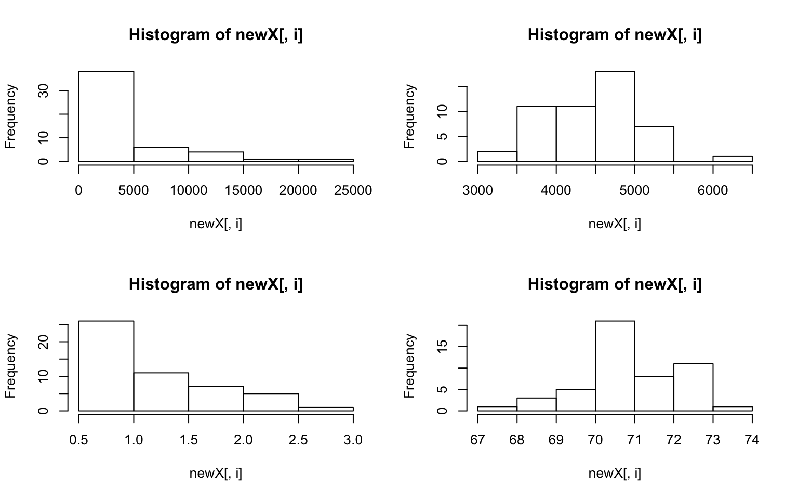
## $Population
## $breaks
## [1] 0 5000 10000 15000 20000 25000
##
## $counts
## [1] 38 6 4 1 1
##
## $density
## [1] 0.000152 0.000024 0.000016 0.000004 0.000004
##
## $mids
## [1] 2500 7500 12500 17500 22500
##
## $xname
## [1] "newX[, i]"
##
## $equidist
## [1] TRUE
##
## attr(,"class")
## [1] "histogram"
##
## $Income
## $breaks
## [1] 3000 3500 4000 4500 5000 5500 6000 6500
##
## $counts
## [1] 2 11 11 18 7 0 1
##
## $density
## [1] 0.00008 0.00044 0.00044 0.00072 0.00028 0.00000 0.00004
##
## $mids
## [1] 3250 3750 4250 4750 5250 5750 6250
##
## $xname
## [1] "newX[, i]"
##
## $equidist
## [1] TRUE
##
## attr(,"class")
## [1] "histogram"
##
## $Illiteracy
## $breaks
## [1] 0.5 1.0 1.5 2.0 2.5 3.0
##
## $counts
## [1] 26 11 7 5 1
##
## $density
## [1] 1.04 0.44 0.28 0.20 0.04
##
## $mids
## [1] 0.75 1.25 1.75 2.25 2.75
##
## $xname
## [1] "newX[, i]"
##
## $equidist
## [1] TRUE
##
## attr(,"class")
## [1] "histogram"
##
## $`Life Exp`
## $breaks
## [1] 67 68 69 70 71 72 73 74
##
## $counts
## [1] 1 3 5 21 8 11 1
##
## $density
## [1] 0.02 0.06 0.10 0.42 0.16 0.22 0.02
##
## $mids
## [1] 67.5 68.5 69.5 70.5 71.5 72.5 73.5
##
## $xname
## [1] "newX[, i]"
##
## $equidist
## [1] TRUE
##
## attr(,"class")
## [1] "histogram"
##
## $Murder
## $breaks
## [1] 0 2 4 6 8 10 12 14 16
##
## $counts
## [1] 2 9 8 10 4 12 4 1
##
## $density
## [1] 0.02 0.09 0.08 0.10 0.04 0.12 0.04 0.01
##
## $mids
## [1] 1 3 5 7 9 11 13 15
##
## $xname
## [1] "newX[, i]"
##
## $equidist
## [1] TRUE
##
## attr(,"class")
## [1] "histogram"
##
## $`HS Grad`
## $breaks
## [1] 35 40 45 50 55 60 65 70
##
## $counts
## [1] 4 6 4 15 13 5 3
##
## $density
## [1] 0.016 0.024 0.016 0.060 0.052 0.020 0.012
##
## $mids
## [1] 37.5 42.5 47.5 52.5 57.5 62.5 67.5
##
## $xname
## [1] "newX[, i]"
##
## $equidist
## [1] TRUE
##
## attr(,"class")
## [1] "histogram"
##
## $Frost
## $breaks
## [1] 0 20 40 60 80 100 120 140 160 180 200
##
## $counts
## [1] 6 2 3 4 5 7 11 4 6 2
##
## $density
## [1] 0.006 0.002 0.003 0.004 0.005 0.007 0.011 0.004 0.006 0.002
##
## $mids
## [1] 10 30 50 70 90 110 130 150 170 190
##
## $xname
## [1] "newX[, i]"
##
## $equidist
## [1] TRUE
##
## attr(,"class")
## [1] "histogram"
##
## $Area
## $breaks
## [1] 0e+00 1e+05 2e+05 3e+05 4e+05 5e+05 6e+05
##
## $counts
## [1] 42 6 1 0 0 1
##
## $density
## [1] 8.4e-06 1.2e-06 2.0e-07 0.0e+00 0.0e+00 2.0e-07
##
## $mids
## [1] 50000 150000 250000 350000 450000 550000
##
## $xname
## [1] "newX[, i]"
##
## $equidist
## [1] TRUE
##
## attr(,"class")
## [1] "histogram"
- let’s assume that we don’t want to live in a state with high illiteracy, high murder, and many freezing days; also assume that each of these factors contribute equally to our opinion (Illiteracy * Murder * Frost) = undesirable What 10 states should we avoid? # hint use prod(); and maybe order()
Solution
livability <- apply(states[,c("Illiteracy", "Murder", "Frost")], 1, prod) # subset to variables of interest
livability[order(livability, decreasing = T)][1:10] # top ten least livable states## Alaska New Mexico South Carolina Georgia Kentucky
## 2576.40 2560.80 1734.20 1668.00 1611.20
## North Carolina Mississippi Tennessee New York Michigan
## 1598.40 1500.00 1309.00 1251.32 1248.75
- use sapply() to plot a histogram of the data below 4 times, in 4 different colors. For extra style, title the plot by it’s color, e.g. the red plot is titled “red”
data_to_plot = c(1,3,4,5,6,3,3,4,5,1,1,1,1,1)
par(mfrow = c(2,2))# run this line to set your plot to make 4 plots in total (2rows, 2columns)Solution
data_to_plot = c(1,3,4,5,6,3,3,4,5,1,1,1,1,1)
my_colors = c("deeppink", "red", "blue", "darkgreen")
par(mfrow = c(2,2)) # extra styling, plots in a 2x2 grid
sapply(my_colors, FUN = function(i) hist(data_to_plot, main = i, col = i))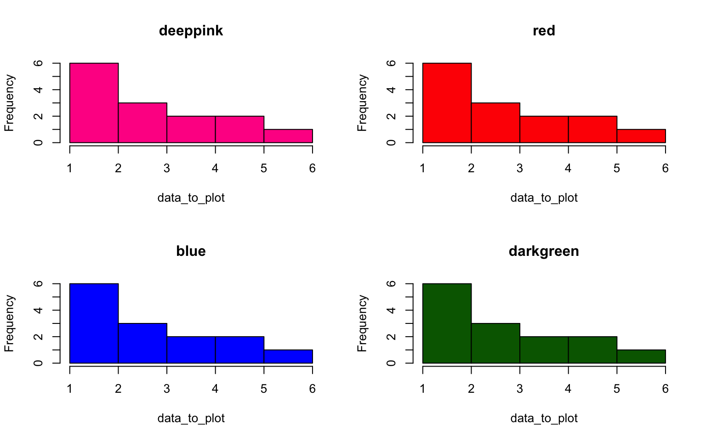
## deeppink red blue darkgreen
## breaks Integer,6 Integer,6 Integer,6 Integer,6
## counts Integer,5 Integer,5 Integer,5 Integer,5
## density Numeric,5 Numeric,5 Numeric,5 Numeric,5
## mids Numeric,5 Numeric,5 Numeric,5 Numeric,5
## xname "data_to_plot" "data_to_plot" "data_to_plot" "data_to_plot"
## equidist TRUE TRUE TRUE TRUE
- Standardize all the variables in the states dataset and save your answer to a new dataframe, states_standardized Hint: to standardize a variable, you subtract the mean and divide by the standard deviation (sd)
Solution
states_standardized = apply(states, 2, function(x) (x-mean(x))/sd(x))
# original:
head(states)## Population Income Illiteracy Life Exp Murder HS Grad Frost
## Alabama 3615 3624 2.1 69.05 15.1 41.3 20
## Alaska 365 6315 1.5 69.31 11.3 66.7 152
## Arizona 2212 4530 1.8 70.55 7.8 58.1 15
## Arkansas 2110 3378 1.9 70.66 10.1 39.9 65
## California 21198 5114 1.1 71.71 10.3 62.6 20
## Colorado 2541 4884 0.7 72.06 6.8 63.9 166
## Area
## Alabama 50708
## Alaska 566432
## Arizona 113417
## Arkansas 51945
## California 156361
## Colorado 103766# standardized
head(states_standardized)## Population Income Illiteracy Life Exp Murder
## Alabama -0.1414316 -1.3211387 1.525758 -1.3621937 2.0918101
## Alaska -0.8693980 3.0582456 0.541398 -1.1685098 1.0624293
## Arizona -0.4556891 0.1533029 1.033578 -0.2447866 0.1143154
## Arkansas -0.4785360 -1.7214837 1.197638 -0.1628435 0.7373617
## California 3.7969790 1.1037155 -0.114842 0.6193415 0.7915396
## Colorado -0.3819965 0.7294092 -0.771082 0.8800698 -0.1565742
## HS Grad Frost Area
## Alabama -1.4619293 -1.6248292 -0.2347183
## Alaska 1.6828035 0.9145676 5.8093497
## Arizona 0.6180514 -1.7210185 0.5002047
## Arkansas -1.6352611 -0.7591257 -0.2202212
## California 1.1751891 -1.6248292 1.0034903
## Colorado 1.3361400 1.1838976 0.3870991
- Create a histogram again for each variable in the states data, but this time label each histogram with the variable names when you plot Hint: instead of using apply to iterate over the columns themselves, you can often iterate over the column names with sapply
Solution
par(mfrow = c(2,2))
sapply(colnames(states), function(x)hist(states[ , x],main = x, xlab = x,col = "darkblue"))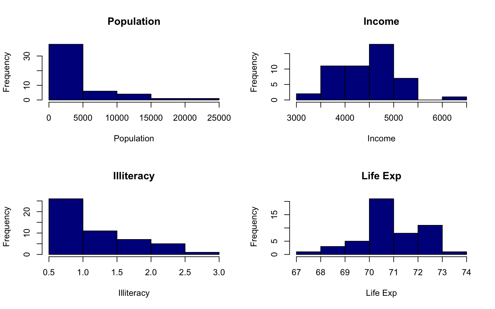
## Population Income Illiteracy Life Exp
## breaks Numeric,6 Integer,8 Numeric,6 Integer,8
## counts Integer,5 Integer,7 Integer,5 Integer,7
## density Numeric,5 Numeric,7 Numeric,5 Numeric,7
## mids Numeric,5 Numeric,7 Numeric,5 Numeric,7
## xname "states[, x]" "states[, x]" "states[, x]" "states[, x]"
## equidist TRUE TRUE TRUE TRUE
## Murder HS Grad Frost Area
## breaks Numeric,9 Integer,8 Numeric,11 Numeric,7
## counts Integer,8 Integer,7 Integer,10 Integer,6
## density Numeric,8 Numeric,7 Numeric,10 Numeric,6
## mids Numeric,8 Numeric,7 Numeric,10 Numeric,6
## xname "states[, x]" "states[, x]" "states[, x]" "states[, x]"
## equidist TRUE TRUE TRUE TRUE6.10 Creature of the Week!
Juvenile Banded Wobbegong, photo © Grey McNeil